|
Götgatan var inte bara borgarnas och den idoga flitens gata, den
var också krogstråket par preference på Södermalm. Ännu på 1870-
talet hade man sexton olika ställen att välja mellan, eller, statistiskt
uttryckt, en krog på drygt var hundrade meter. Frestelserna började
redan i Götgatan 5, där J. O. Ramdahl stod för rusthållet. Mat serverade han inte, endast brännvin och öl, med det obligatoriska hårda brödet som enda tilltugg. Krogen hörde just inte till de ansedda.
Stamkunderna var mest hantverksgesäller, droskkuskar och åkare,
som tog sig en paus innan de forcerade Götgatsbacken.
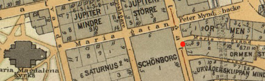
Det mera rputerliga Söder höll sig i dessa trakter till Pelikan nere vid Brunnsgränd eller gick på källaren Solen, som låg några steg från Götgatan i huset S:t Paulsgatan 8. Källarmästare A. M. Thörnström döpte under Vegafebern på 1880-talet om Solen efter Nordenskiölds fartyg Vega.
Några år senare,1889, flyttade källaren ned till hörnet av Götgatan,
S:t Paulsgatan 2a, och blev restaurang med fin festvåning.


Pelikan, Brunnsbacken
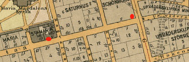
Källaren Solen
Pelikan till Blekingegatan
|
Uppdraget att utforma huset på Blekingegatan 40 under början av 1900-talet hade gått till arkitekten Sam Kjellberg. Byggnaden uppfördes som restaurang med personalbostäder. Kjellberg ritade en jugendinspirerad byggnad med elegant svängd takfot och ett stort bågfönster till matsalen. År 1904 stod huset vid Blekingegatan 40 färdigt. En restaurang inrättades i det nybyggda huset av Stockholms utskänkningsaktiebolag och den fick namnet Port Arthur, av stamgäster kallad Pottan.
|
|
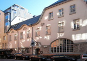
|
Från 1904 fram till 1931 existerade Port Arthur på Blekingegatan och Pelikan vid Brunnsbacken parallellt, båda så småningom ägda av det statliga SARA-bolaget.
År 1969 köpte SARA krogen på Blekingegatan och bytte namn på den från Port Arthur till det traditionstyngda Pelikan, som sedan 1931 varit ett vakant restaurangnamn. År 1984 köptes etablissemanget av två kvinnor som kom att driva det i nästan trettio år. I december 2013 trädde nya ägare in som förutom Pelikan bland annat driver anrika restaurang Blå Porten på Djurgården.
*********
|
Restaurang Vega blev
också konstnärstillhåll. Anders Zorn och Albert Engström, som på 1890-talet var Söderbo, kom hit och samlade ett glatt lag omkring sig. Det glada laget var väl inte alltid så
penningstarkt, men källarmästare Ernst Linderoth, som då var värd
på stället, tyckte om konstnärer och tillhandahöll i värsta fall sina
varor mot deras alster.
|
|
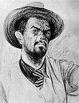
|

|
|
I ett inre rum, tillbyggt 1890 och enligt traditionen avdelat för Zorn och hans vänner, fick - fortfarande enligt traditionen - Vicke Andrén och
ytterligare två fastsupna konstnärer måla av sin skuld. Motiven låg nära till hands. Här ser man, fartyget självt och en pittoresk provkarta på alla de folkslag besättningen kom i kontakt med , från tjuktjerna vid Pitlokaj, det sibiriska fångstlägret där Vega övervintrade 1878-79, till
skönt snedögda geishor, frappanta parisiskor och blonda Stockholms-
|
damer. När restaurang Vega stängdes, lämnade Bacchus - åtminstone officiellt - lokalen och onestep och charleston
drog 1920-
talets Söderungdom till danslokalen Blå Tuppen.
Den konstälskande källarmästaren dog 1919,
Vega stängdes året därpå, men i det café som senare öppnades i de
gamla restauranglokalerna, finns fortfarande minnen från den Linderothska tiden.
|
|

|
Litet längre upp i Götgatsbacken, i hörnhuset vid Hökensgatan,
där Södra Pariserbazaren nu lockar ungdomen med sina leksaksfönster, låg Furstens, välkänd destillationsfabrik med tillhörande utskänkningsställe. Erik Wilhelm Furst, som vann burskap som traktör 1848
men sedermera titulerade sig destillator, levde länge i Söderbornas
minne som ofrivillig välgörare, sedan den augustikväll 1857 då Mosebacketeatern brann och han, för explosionsriskens skull, på kunglig
order lät hälla ut tusentals kannor brännvin i Götgatsbacken, där
folk låg med muggar och fat för att ta vara på gudsgåvorna.
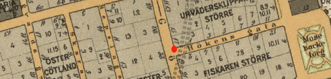
Branden på Mosebacke ägde rum den 26 augusti 1857 på nordöstra Södermalm i Stockholm. Eldsvådan totalförstörde 25 byggnader, bland annat den nyuppförda Södra Teatern. Efter branden anlades Mosebacke torg i en del av det drabbade området. Branden bröt ut i fiskköparen Rölings hus nummer 13 vid Hökens gränd (nuvarande Hökens gata). Man hade hållit på att värma tjära för att stryka huset. Elden tog fatt i trävirket och spred sig snabbt mot norr och syd. Branden drabbade byggnaderna i delar av kvarteren Urvädersklippan Större och Mindre samt Fiskaren Större ner till Svartensgatan och kvarteret Mosebacke inklusive Södra Teatern. Navigationsskolan (litt. "C" på kartan) klarade sig. 25 byggnader förstördes och omkring 600 personer blev husvilla. Södra Teatern var brandförsäkrad och fick återuppbyggas av dåvarande ägaren C.A. Wallman. Den östra delen av kvarteret Fiskaren Större återuppbyggdes dock inte utan här skapades Mosebacke torg.
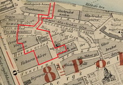
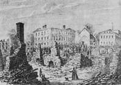
Brandspridningsområdet (röd linje) Händelsen uppmärksammades i bl a Ny Illustrerad Tidning.
Forts överst i högerspalten!
|
|
Solen, sedermera Vega, hörde till de bättre ställena på Söder, Fursten drev utskänkning mer som binäring till destilleringen, medan
Mellringens ytterligare ett stycke upp i Götgatsbacken - nu Götgatan 29 - svarade bättre mot begreppet krog i vedertagen mening.
Däri ligger intet förklenande om krögare Mellrings rörelse, »den hörde till de ställen det var trevnad på», för att citera en gammal Söderbo. Krogen var inrymd i samma fastighet som H. S. Glassels
hökarbod. På gården fanns bondkvarter, och bönder från Sorunda och andra socknar söder om huvudstaden hörde till stamkunderna.
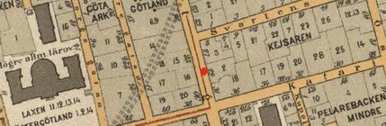
Entrén från Götgatan ledde rakt in i krogrummet. De kala, limstrukna väggarna saknade alla prydnader, så vida man inte dit kunde
räkna en pittoresk rökslinga i ena hörnet från kaminen, rummets
enda värmekälla. På det sågspånsströdda golvet trängdes ett tiotal
grova, gulmålade bord. Vid varje bord stod fyra stolar, gulmålade
även de och av en typ som man såg på alla krogar: fyra raka ben, enkel fyrkantig sittbräda, lågt ryggstöd och överhuvudtaget byggda
för att stå emot påfrestningar. Duktyg på borden var osedd lyx; den
enda dekor som förekom var oavsiktlig och utgjordes av otaliga ringar efter glas. Dominerande möbel var den zinkklädda krogdisken med
hyllor på baksidan för krögarens kassalåda och bröd, servis samt ölflaskor.
Bakom disken stod ett stort brännvinsfat uppallat på bockar.
Fatet rymde bortåt fyrahundra liter, och innehållet räckte till cirka
tvåhundra påfyllningar i den brännvinsflaska som krögaren hanterade vid disken. De två uppasserskorna, som skötte serveringen vid borden,
hade varsin flaska, för vilken skulle redovisas innan ny påfyllning ägde rum. Före Göteborgssystemets tillkomst - varom mera nedan
- serverades suparna i tre olika storlekar: stora, som rymde sex à sju
centiliter och kostade åtta öre, randiga, om cirka fem centiliter à sex
öre och små supar på tre à fyra centiliter för fyra öre.
När krögaren slog upp fluidet höll han sig över spillbrickan, en
perforerad zinkplåt med uppsamlingskärl för spillvaran. Brännvinet
fick en frän smak av zinken, men ratades inte för den skull utan spetsades med malört och såldes på nytt som »besk». På disken hade krögaren också tilltugg till suparna: dels en korg med hårt bröd, brutet i småbitar och till fritt förfogande - en liknande brödkorg stod på
varje bord - dels en bricka med bredda smörgåsar och småassietter,
sill, halstrad saltströmming, rödbetor och gurka. Smörgåsarna var ofta
bredda med istersmör, en då ganska vanlig restaurang- eller åtminstone krogblandning, som krögarna själva smälte samman av ister och
lök och kryddsatte med peppar. I en ställning på krogdisken hängde
mattavlan, en svartmålad träskiva, där dagens rätter noterades. Maten
bestod av vanlig husmanskost, och portionerna brukade vara rejält
tilltagna. Många ställen hade sina specialrätter, hos Mellringens var
det måndagarnas saltströmming med löksås.
Liksom vid de flesta krogar med matservering fanns även här en
källaravdelning eller så kallat gästrum för litet bättre publik. Gästrummen brukade vara helt skilda från kroglokalerna, och till Mellringens kom man via gården. Rummet var rätt litet och rymde
endast en sex, sju bord. Standarden var väl något högre än ute på krogen, men kunde absolut inte kallas luxuös. Det stundom nyskurade
golvet saknade sågspån, men hade heller inga mattor, utom en liten
stump vid dörren att torka fötterna på. Väggarna var kala - ibland
kunde man dock på gästrummen se enklare oljetryck - och möblemanget av samma typ som på krogen, ehuru litet smäckrare till dimensionerna. Soffor och stoppade stolar hörde ännu på 1870-talet
till källare och finare ställen. En mindre disk, eller rättare skänk för
koppar och glas, stod i ena hörnet. Då så kallad disksupning inte förekom på gästrummen, behövde den ingen framträdande plats. Däremot
fanns ständigt ett stort smörgåsbord framdukat borta vid fönstret. »Utan vidare spisning» kostade detta 75 öre, i vilket pris också ingick
en karaffin med tre supar. Karaffinen var graderad med ett streck
för varje, och man fick avdrag om inte allt brännvinet hade gått åt.
»Men», för att åter citera, »det fanns ju de som var så fulla i fan att
de hällde i ättika i karaffinen och lämnade tillbaka den».
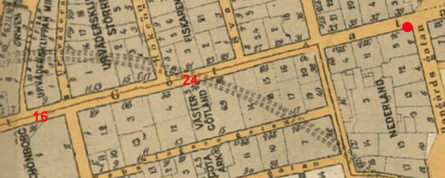
De interiörer som nu skisserats upp kan i stort sett gälla som beskrivning på alla krogar längs Götgatan - och för övrigt i hela
Stockhalm - kring 1870-talet. Ungefär så såg det ut på Glada Laxen
och Tullkrogen i Götgatan 16 respektive 24(nu 22 och 30), hos
Brännpelle i hörnet vid Bangårdsgatan och i Strykjärnet vid Tjärhovsgatan, där nu Söders nya storhotell tagit plats. I någon mån utgjorde den förut nämnda
Hamburg i Götgatan 55 (nu 53) och Drufvan i hörnet av Falkenbergs-, nu Åsögatan undantag.
Drufvan var ursprungligen en vanlig krog, men på 1880-talet rustades stället upp,
fick stoppade möbler i gästrummen och kungaporträtt på väggarna
samt blev källare med gott anseende. Innehavarinnan, fru Anna Zetterholm, som ärvt Drufvan efter sin man, dog 1898, men traditionerna förvaltades väl av efterträdaren C. A. Borgström, som gått i
Bengt Carlssons och Ivar Bäckströms skola på du Nord. Det pittoreska 1700-talsnuset där källaren var inrymd stod i vägen för 1900-talets
nya Götgata, varför Drufvan flyttade norrut, först till hörnet av
Kocksgatan, sedermera snett över Götgatan till nr 72, där den fortfarande håller till.
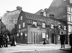
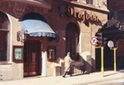
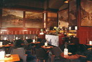
Drufvan 1900 Drufvan Götgatan 72 1967 Interiör 1969
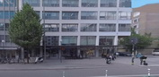
2018 bl a Hemtex på hörnet Åsögatan/Götgatan 72
Fortsätt i vänsterspalten!
|
|


{kind=link}
{kind=link}
{kind=link}
{kind=link}
{kind=link}
{kind=link}
{kind=link}
{kind=link}
{kind=link}
{kind=link}
{kind=link}
{kind=link}
{kind=link}
{kind=link}
{kind=link}
{kind=link}
{kind=link}
{kind=link}